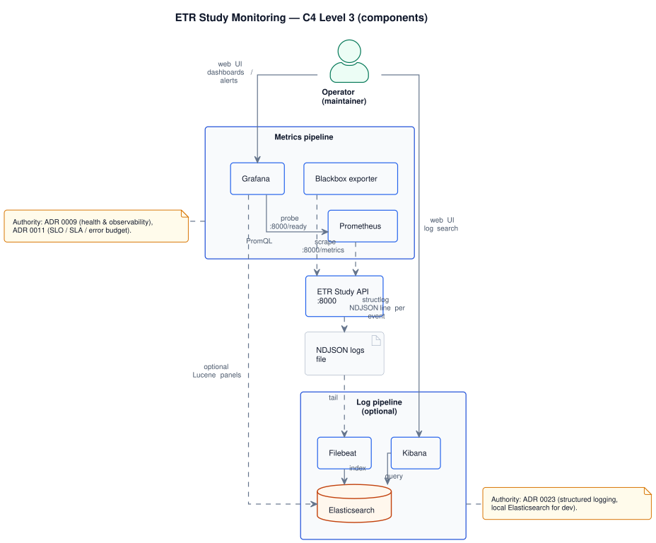

monitoring · Architecture
Component-level architecture of the monitoring service: a metrics pipeline
(Prometheus, Blackbox, Grafana) and an optional log pipeline (Filebeat, Elasticsearch, Kibana). The
service consumes the api at three surfaces — /metrics
(Prometheus exposition), /ready (Blackbox HTTP probe), NDJSON log file (Filebeat tail).
Authority: ADR 0009 (health and observability), ADR 0011 (SLO / SLA / error budget), ADR 0023 (structured logging, local Elasticsearch).
C4 Level 3 — components
Two pipelines, both optional, both local-only by default. Operators read Grafana for dashboards / alerts and Kibana for log search. There is no ingest from systems other than the api.
Components inside monitoring
Metrics pipeline · log pipeline · operator UIs.

services/portal/internal/uml/architecture/monitoring_component_view.puml
Metrics pipeline
| Component | Role | Reads from / writes to |
|---|---|---|
| Prometheus | Time-series database, scraper, recording / alerting rule engine. | Scrapes :8000/metrics on the api on a fixed interval; stores series locally; serves PromQL. |
| Blackbox exporter | External HTTP probe — turns the /ready endpoint into a Prometheus-compatible series. | Probes :8000/ready; exposes results on its own /probe endpoint that Prometheus scrapes. |
| Grafana | Dashboards, alert rendering, notification routing. | Reads PromQL from Prometheus; reads Lucene from Elasticsearch (when log pipeline is on). |
Log pipeline (optional)
Per ADR 0023, the log pipeline is local-only and dev-focused. Production-grade log shipping is out of scope at this stage.
| Component | Role | Reads from / writes to |
|---|---|---|
| Filebeat | Tails the api's NDJSON log file and ships records. | Tails the file; writes to Elasticsearch over HTTP. |
| Elasticsearch | Inverted-index store for log records. | Indexed by Filebeat; queried by Kibana. |
| Kibana | Operator UI for log search and discovery. | Queries Elasticsearch via Lucene. |
Alerting model
Per ADR 0011, alerts are
error-budget-driven: alerts fire on burn rate, not on individual failed requests. Recording rules pre-compute
the relevant ratios (error_rate, latency_p95, availability_30d) so that
alerting rules stay short and inspectable.
- Fast burn: page when 14.4× burn over 1 h would exhaust the 30-day budget — actionable signals only.
- Slow burn: ticket when 6× burn over 6 h sustains — schedule, don't page.
- Probe failure: Blackbox
/readydown for 2 consecutive scrape intervals — page.
Concrete PromQL is owned by monitoring · API reference; it is the contract this service publishes for operators.
See also
- monitoring · API reference — scrape / probe contracts, recording rules, dashboard names
- monitoring · Runbooks — symptom index, recovery
- api · Architecture — what monitoring is observing
- ADR 0009
- ADR 0011
- ADR 0023
Page history
| Date | Change | Author |
|---|---|---|
Filled C4 L3, metrics + log pipelines, alerting model. New PlantUML source monitoring_component_view.puml. |
Ivan Boyarkin | |
| Initial skeleton stub. | Ivan Boyarkin |